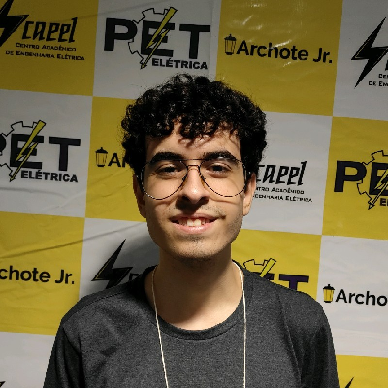

- Home
- >
- Currículo
Currículo
Dados Pessoais

Nome:
João Gabriel Lemes Joani
Data de Nascimento:
30/01/2006
Nacionalidade:
Brasileiro
Residência:
itajubá, MG, Brasil
Idiomas:
Português (Nativo)
Inglês (Intermediário)
Sobre Mim
Estudante de Engenharia Elétrica na Universidade Federal de Itajubá (UNIFEI). Profissional em desenvolvimento com foco em tecnologia, programação e otimização de processos. Busco aplicar conhecimentos técnicos e demonstrar forte iniciativa para o aprendizado contínuo e a contribuição estratégica em projetos.
Educação
2024 - Em andamento
Bacharelado em Engenharia Elétrica / UNIFEI
Em curso (Previsão de Conclusão: 2028). Estudante da Universidade Federal de Itajubá (UNIFEI).
2025
Lean Six Sigma White Belt / RL&Associados
Formação em conceitos básicos e princípios da metodologia Lean Six Sigma, focada na gestão e otimização de processos (Qualidade e Eficiência).
2023
Ensino Médio / Colégio FEPI
Concluído no Colégio Fundação de Ensino e Pesquisa de Itajubá (Colégio FEPI). (Formação fundamental e média em período integral).
Habilidades
Programação Python
Domínio da lógica e estrutura de programação Python, com experiência prática nas bibliotecas Pandas (manipulação de dados) e Matplotlib (visualização de dados).
Programação Matlab/GNU Octave
Experiência com Matlab e GNU Octave, aplicando lógica de programação para resolução de problemas numéricos, manipulação de matrizes e automação de tarefas.
Alta Flexibilidade
Alta capacidade de adaptação e flexibilidade, permitindo rápida integração e desempenho eficaz em diferentes ambientes de trabalho e tipologias de projetos/serviços.
Autodidata
Excelente facilidade para aquisição ágil de novas habilidades técnicas, com forte iniciativa para o autoaperfeiçoamento, treinamento contínuo e autônomo.
⇜ Voltar ao início